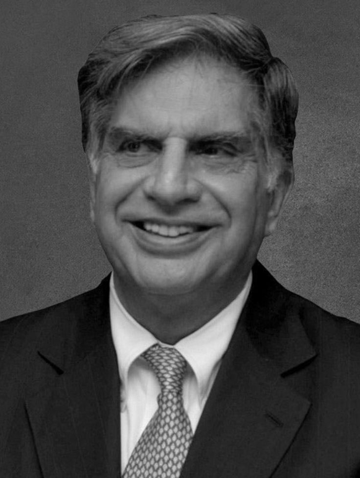
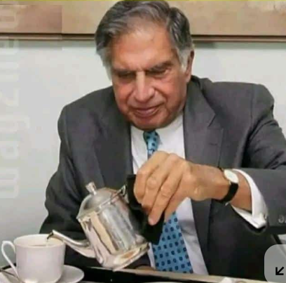
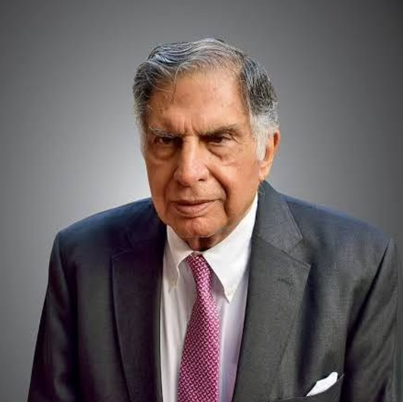

The 50-Card Visual Library of Ratan Tata
A collection of 50 resources, each with a unique source or theme. The visual style is inspired by modern digital editorial layouts.
Official Bio
Philanthropy
Global
Interview

Early Life
Vision
Current
Compassion
Ethics
Quote
Youth
Startup
Legacy
Innovation
Legacy
Mentorship
Ethics
History
Future
Challenge
Honors
Integrity
Consumer
Personal
Angel
Rebranding
CSR
Technology
Character

Aviation
Education
Resilience

Challenge
Innovation
Global

Honors
Culture

Leadership
Design
FMCG
Technology
Philanthropy
Vision
Integrity
Challenge
Wisdom

Politics
Character
Legacy
Vision